- 线性规划
- 步骤和实战
第三课笔记
线性规划（麦当劳）
原始数据
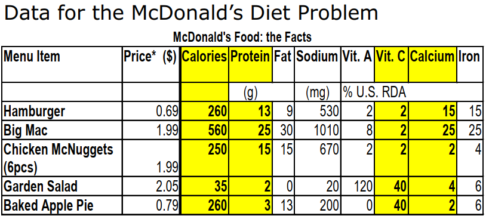
决策变量
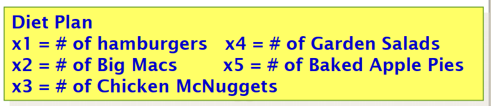
目标函数
- 暂时只有一个
- 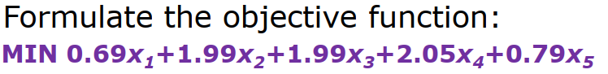
约束条件
- 可以有多个
- 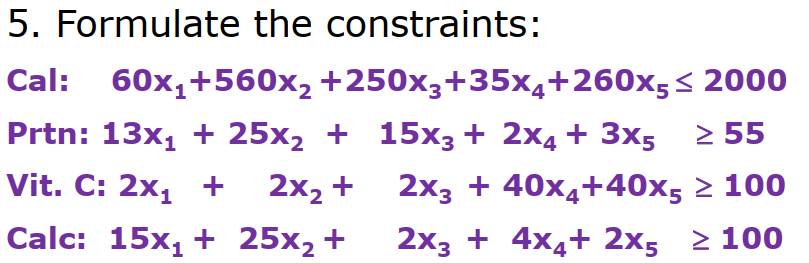
非负需求
- 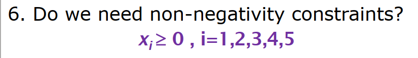
完整数学模型
- 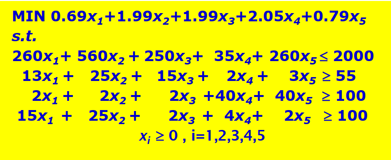
Excel 操作
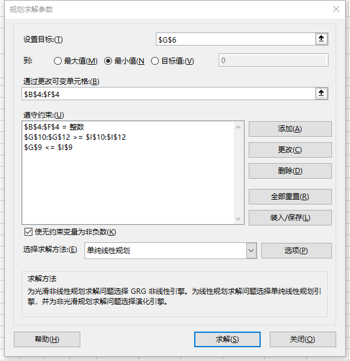
- 在选项当中：取消勾选非整数约束
线性规划（销售产品组合）
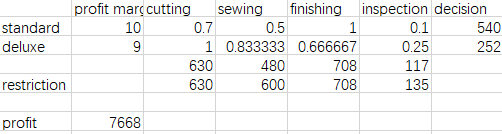
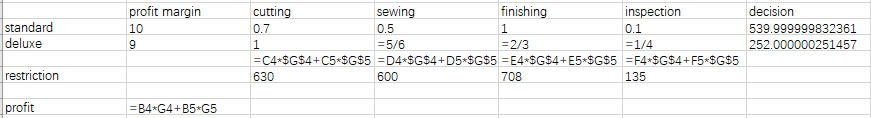
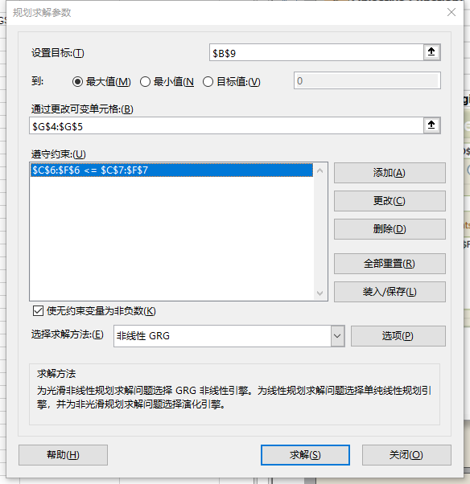
Blending Example
- 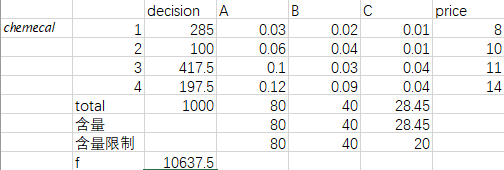
- 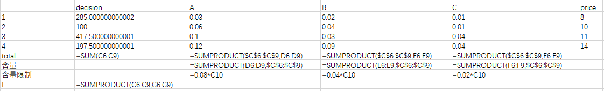
- 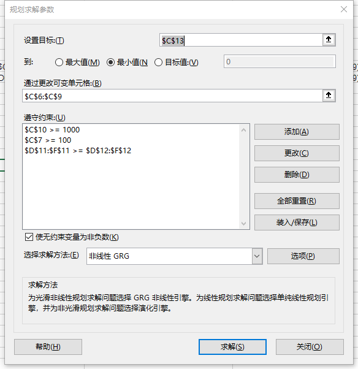
Linear Programing Terms
- Decision variables
- the controllable inputs to the model
- should completely describe the decisions to be made
Objective function
- the decision maker wants to maximize or minimize
- the function to be maximized or minimized is called the objective function
Constraints
- restrictions placed on a decision variable or a group of decision variables
Linear programing
- maximize or minimize a linear function of the decision variables
- satisfy a set of constraints, each constraints must be a linear equation or a linear inequality